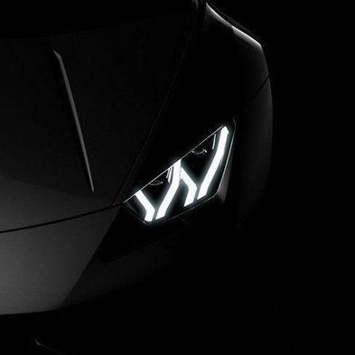

Piergiorgio Benenato Ultima modifica: Tanto tempo fa...
5.
Porsche 911 GT3 RS Voto 7.5
Le linee riprendono il classico e puro stile Porsche, ma nettamente più moderne rispetto al modello precedente.
La linea è inconfondibilmente Porsche con i classici fari anteriori tondi, luci di marcia diurna con tecnologia LED.
Il posteriore è stato cambiato solo in alcuni particolari, spiccano i nuovi fari dal profilo basso e allungato.
Viene proposta in tre versioni distinte di carrozzeria: Coupé, Cabriolet e Targa.
Presentata al Salone di Ginevra 2013, dispone di un allestimento più sportivo, è spinta dal classico motore 6 cilindri boxer da 3,8 litri di cilindrata,
sviluppa una potenza massima di 475 CV a 8250 giri/min, il regime massimo di rotazione raggiunge i 9000 giri/min,
è disponibile unicamente in abbinamento al cambio automatico a doppia frizione PDK a 7 marce, con rapporti più corti per privilegiare lo scatto e
trazione posteriore. Raggiunge una velocità massima di 315 km/h e impiega 3,5 secondi nell'accelerazione da 0 a 100 km/h. Esternamente si caratterizza
per delle prese d'aria di raffreddamento dei radiatori maggiorate, un piccolo sfogo d'aria vicino al cofano anteriore, uno spoiler più profilato sul
paraurti anteriore, diversi i supporti degli specchietti retrovisori, al posteriore è presente un alettone fisso, un paraurti di diversa conformazione
che include una griglia con doppio terminale di scarico centrale e diffusore per incrementare la deportanza.
In una frase: Eterna bellezza
4.
McLaren 570S Voto 8
La McLaren 570S è un'autovettura sportiva ad alte prestazioni progettata e costruita dalla casa automobilistica inglese McLaren dal 2015 al 2021.
È stata svelata per la prima volta al pubblico al Salone dell'automobile di New York nel 2015. La McLaren ha annunciato che il modello avrebbe aiutato a triplicare
il proprio fatturato aziendale entro il 2020, con un prezzo di listino fissato sui 180.000 dollari americani. La McLaren 570S è lunga 456 cm, larga 210 cm e alta 120 cm.
L'auto è spinta dallo stesso motore montato per la McLaren 650S ma depotenziato, un V8 di 90° da 3.8 litri di cilindrata biturbo che riesce ad esprimere una potenza massima di
570 CV (419 kW) a 7500 giri/min e una coppia di 600 Nm tra 5000-6500 giri/min. Il peso totale della vettura è di 1313 kg con emissioni di CO2 equivalenti a 258 g/km.
Raggiunge la velocità massima di 328 km/h e accelera da 0 a 100 km/h in 3,2 secondi e da 0 a 200 km/h in 9,5 secondi. il rapporto peso-potenza è 434 CV per 1000 kg di peso, cioè 2,3 kg per CV.
La meccanica della 570S prevede sospensioni derivate da quelle delle vetture di Formula 1, a doppio quadrilatero e barra antirollio sia davanti che dietro. Non è presente su questa vettura il
sistema di sospensioni attive che fa a meno delle barre antirollio delle sorelle maggiori. Quanto ai freni, l'impianto prevede dischi ventilati di 39,4 cm di diametro e 3,6 cm di spessore alle
ruote anteriori e 38,0 cm di diametro e 3,4 cm di spessore alle ruote posteriori. Le pinze sono azionate da 6 pistoncini. Lo spazio di frenata dichiarato dalla McLaren per fermare la 570S dalla
velocità di 100 km/h è di 33 metri; per fermarsi cominciando a frenare alla velocità di 200 km/h ci vogliono invece 126 metri. Per scaricare la potenza del propulsore la trasmissione è affidata un cambio a doppia frizione a 7 rapporti.
In una frase: Ingegno inglese
3.
Audi R8 Voto 8.5
Presentata al Salone dell'automobile di Ginevra del 2015, il design non viene stravolto rimanendo fedele alla serie precedente,
ma le linee vengono evolute diventano globalmente più spigolose rispetto alla generazione che va a sostituire: nuovi sono gli interni, la calandra
è tipicamente Audi bassa e spigolosa, richiama il design della TT con il logo posto sul cofano motore invece che sulla griglia anteriore, mentre le
linee sono meno estreme e più sinuose e rispetto a quelle della Huracán, dal quale la vettura deriva. Rispetto al vecchio modello perde mediante 50 Kg
di peso, grazie al largo uso di fibra di carbonio e di alluminio per il telaio e parte della carrozzeria.
Rispetto alla "R8 42", non è più disponibile ne il cambio manuale ne il motore V8: al lancio le uniche due versioni a listino sono dotate del V10 progettato
e sviluppato da Audi e prodotto a Győr in Ungheria e condiviso con la Huracán: la meno prestante ha 540 CV, mentre la più potente denominata "R8 V10 Plus"
ha 610 CV. La velocità massima è 325 Km/h con uno scatto da 0 a 100 Km/h in 3,2 secondi.
In una frase: Ribelle tedesca
2.
Ferrari 488 Pista Voto 9
Durante il Salone dell'automobile di Ginevra del 2018 debutta la Ferrari 488 Pista.
La potenza del motore viene aumentata fino a 720 CV a 8000 giri e 770 N·m di coppia, diventando
il motore V8 più potente mai montato su un'auto stradale della casa del cavallino. Il peso totale scende a 1280 kg.
Per risparmiare peso viene utilizzata fibra di carbonio per cofano, per il paraurti, per l'alettone
posteriore e per la prima volta anche per i cerchi da 20" optional. La velocità massima dichiarata è di
330 km/h. Per toccare i 100 km/h da fermo occorrono 2,9 secondi mentre i 200 km/h sono raggiunti in 7,6
secondi. Al Concorso d'eleganza di Pebble Beach nell'agosto seguente esordisce anche la versione spider,
che in seguito viene presentata in Europa al Salone dell'automobile di Parigi del 2018.
In una frase: Cavallo pazzo
1.
Lamborghini Huracan Performante Voto 9.5
La vettura in seguito sarebbe stata mostrata nella sua forma definitiva per
il successivo avvio alla produzione di serie nel 2017 al Salone di Ginevra. La Huracán Performante ha ricevuto consistenti
modifiche nel disegno del corpo rispetto alle altre versioni della stessa. I maggiori cambiamenti sono visibili nei paraurti
anteriori e posteriori. L'interno presenta un nuovo design dei sedili e un nuovo tachimetro digitale, simile a quello della Aventador SV.
Il propulsore delle altre Huracán, il 5,2 litri V10, è stato potenziato a 640 CV erogati a 8000 giri/min con 601 Nm di coppia.
Il peso è diminuito di 40 kg, grazie al largo uso di alluminio forgiato, di fibra di carbonio per la carrozzeria e all'utilizzo di parti cave per alcuni
elementi. La fibra di carbonio è stata impiegata anche per il nuovo alettone posteriore, splitter anteriore e per il diffusore;
questi globalmente costituiscono un sistema di elementi singoli aerodinamici attivi, che grazie alla deportanza da loro
generata non solo incrementano il carico aerodinamico della vettura ma ne aiutano anche il movimento e l'agilità in curva.
Il veicolo è in grado effettuare lo 0-100 km/h in 2,9 secondi e lo 0-200 km/h in 8,9 secondi, con una velocità massima di 325 km/h.